grades-md-to-csv-vscode PASS 1.0
grade probeintent transformdomain educationdifficulty d3ambiguity a1voice terseapps vscode + terminalbatch v11-500-s0
In VS Code, turn the table in /home/user/course/grades.md into /home/user/course/grades.csv with header Student,Assignment,Score, one row per table row, and drop any row whose score is blank.
task config + evaluator
{
"config": [
{
"type": "execute",
"parameters": {
"command": "python3 -c \"import os;d='/home/user/course';os.makedirs(d,exist_ok=True);rows=[('Nadia Halvorsen','Essay 1','88'),('Nadia Halvorsen','Lab Report','91'),('Colin Beaumont','Essay 1',''),('Colin Beaumont','Lab Report','76'),('Priyanka Sethi','Essay 1','94'),('Priyanka Sethi','Lab Report','89'),('Marcus Adeyemi','Essay 1','67'),('Marcus Adeyemi','Lab Report',''),('Ines Cabral','Essay 1','72'),('Ines Cabral','Lab Report','80'),('Jonas Weber','Essay 1','85'),('Jonas Weber','Lab Report','78'),('Leah Okafor','Essay 1',''),('Leah Okafor','Lab Report','95')];open(d+'/grades.md','w').write('# Spring Term Grades\\n\\n| Student | Assignment | Score |\\n| --- | --- | --- |\\n'+''.join('| %s | %s | %s |\\n'%r for r in rows)+'\\nBlank scores mean the work was never submitted.\\n')\"",
"shell": true
}
},
{
"type": "launch",
"parameters": {
"command": [
"code",
"/home/user/course/grades.md"
]
}
}
],
"evaluator": {
"func": "check_include_exclude",
"result": {
"type": "vm_command_line",
"command": [
"python3",
"-c",
"import sys, traceback\ndef _main():\n import csv, os, sys\n p = '/home/user/course/grades.csv'\n if not os.path.isfile(p):\n print('grades.csv missing', file=sys.stderr)\n print('FAIL')\n raise SystemExit\n rows = [r for r in csv.reader(open(p, newline='')) if any(c.strip() for c in r)]\n expect = [['student','assignment','score'],['Nadia Halvorsen','Essay 1','88'],['Nadia Halvorsen','Lab Report','91'],['Colin Beaumont','Lab Report','76'],['Priyanka Sethi','Essay 1','94'],['Priyanka Sethi','Lab Report','89'],['Marcus Adeyemi','Essay 1','67'],['Ines Cabral','Essay 1','72'],['Ines Cabral','Lab Report','80'],['Jonas Weber','Essay 1','85'],['Jonas Weber','Lab Report','78'],['Leah Okafor','Lab Report','95']]\n norm = [[c.strip() for c in r[:3]] for r in rows]\n if not norm or [c.lower() for c in norm[0]] != expect[0]:\n print('bad header: %r' % (norm[0] if norm else None), file=sys.stderr)\n print('FAIL')\n raise SystemExit\n if norm[1:] != expect[1:]:\n print('rows mismatch: got %r' % (norm[1:],), file=sys.stderr)\n print('FAIL')\n else:\n print('PASS')\n\ntry:\n _main()\nexcept Exception:\n traceback.print_exc(file=sys.stderr)\n print(\"FAIL\")\n"
]
},
"expected": {
"type": "rule",
"rules": {
"include": [
"PASS"
],
"exclude": [
"FAIL"
]
}
}
}
}
step 1 00:33:47
THINKINGLet me understand the task. I need to read /home/user/course/grades.md, which contains a markdown table, and create /home/user/course/grades.csv with header Student,Assignment,Score, one row per table row, dropping rows with blank scores.
Let me first read the table from the screenshot:
- Nadia Halvorsen, Essay 1, 88
- Nadia Halvorsen, Lab Report, 91
- Colin Beaumont, Essay 1, (blank)
- Colin Beaumont, Lab Report, 76
- Priyanka Sethi, Essay 1, 94
- Priyanka Sethi, Lab Report, 89
- Marcus Adeyemi, Essay 1, 67
- Marcus Adeyemi, Lab Report, (blank)
- Ines Cabral, Essay 1, 72
- Ines Cabral, Lab Report, 80
- Jonas Weber, Essay 1, 85
- Jonas Weber, Lab Report, 78
- Leah Okafor, Essay 1, (blank)
- Leah Okafor, Lab Report, 95
Rather than doing this manually in VS Code, the most reliable approach is to use a terminal. But the task says "In VS Code". I can use VS Code's integrated terminal to write the CSV file. That's still "in VS Code". Let me use the terminal to be accurate and reliable.
Actually, the best approach: use the terminal within VS Code. Let me open a terminal and use a script to parse the markdown table into CSV, dropping blank score rows. This is most reliable.
Let me write a Python script or use the terminal. I'll open the integrated terminal in VS Code and create the CSV.
Let me first dismiss the update notification, then open the terminal.
I'll take the approach of using the VS Code integrated terminal (Terminal > New Terminal) and run a Python one-liner that reads grades.md, parses the table, and writes grades.csv.
Let me start by taking a screenshot / opening terminal.
ACTIONI'll create the CSV reliably using the VS Code integrated terminal. First, let me dismiss the update notification and open a terminal.
TOOL CALL<tool_call>
<function=computer_use>
<parameter=action>
left_click
</parameter>
<parameter=coordinate>
[981, 908]
</parameter>
</function>
</tool_call>
EXECUTED (pyautogui in VM)pyautogui.click(1885, 981)
step 2 00:33:52
THINKINGThe notification is dismissed. Now let me open the integrated terminal via Terminal menu.
ACTIONThe notification is dismissed. Now let me open the integrated terminal to write the CSV reliably.
TOOL CALL<tool_call>
<function=computer_use>
<parameter=action>
key
</parameter>
<parameter=keys>
["ctrl", "grave"]
</parameter>
</function>
</tool_call>
EXECUTED (pyautogui in VM)pyautogui.hotkey("ctrl", "grave")
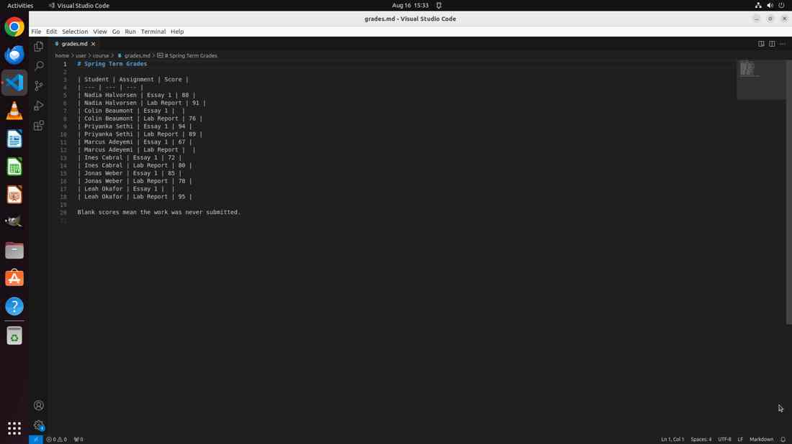
step 3 00:33:58
THINKINGThe terminal didn't open with ctrl+grave. Let me use the Terminal menu instead.
ACTIONThe terminal didn't open with the shortcut. Let me use the Terminal menu.
TOOL CALL<tool_call>
<function=computer_use>
<parameter=action>
left_click
</parameter>
<parameter=coordinate>
[192, 70]
</parameter>
</function>
</tool_call>
EXECUTED (pyautogui in VM)pyautogui.click(369, 75)
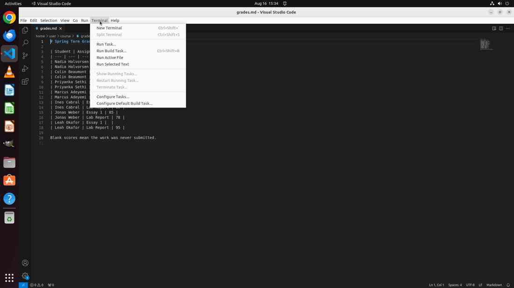
step 4 00:34:04
THINKINGThe Terminal menu is open. Let me click "New Terminal".
TOOL CALL<tool_call>
<function=computer_use>
<parameter=action>
left_click
</parameter>
<parameter=coordinate>
[211, 95]
</parameter>
</function>
</tool_call>
EXECUTED (pyautogui in VM)pyautogui.click(405, 102)
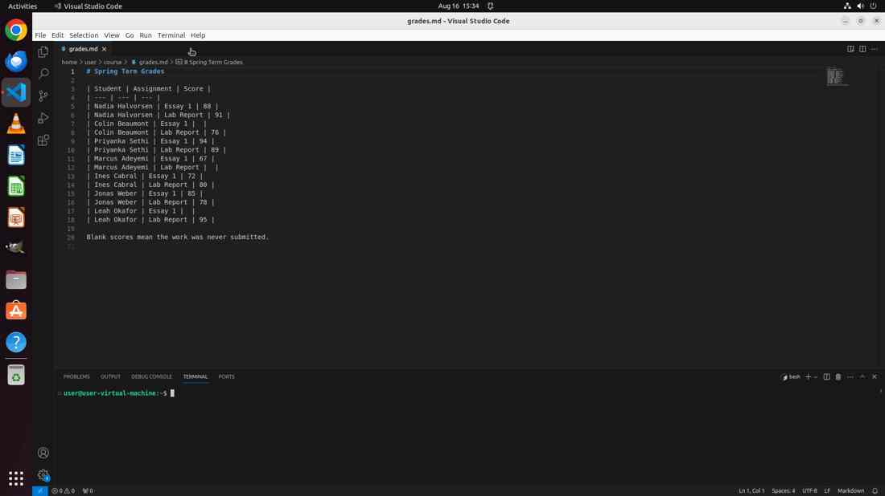
step 5 00:34:22
THINKINGThe terminal is open. Now I'll write a Python script to parse the markdown table into CSV. I'll use a heredoc-free approach - just a single python3 -c command. But the markdown table parsing: I need to handle the table rows which start with `|`.
Let me write a robust Python script. The approach:
- Read grades.md
- For each line, strip. If it starts with '|', split by '|', get the cells.
- The cells are: ['', 'Student ', ' Assignment ', ' Score ', ''] for header; the separator row has '---'; data rows.
- Skip header row (contains "Student") and separator row (contains only dashes).
- For each data row, extract student, assignment, score.
- If score is blank, drop the row.
Let me write the script. I'll use python3 with a script passed via -c. But a multi-line -c is tricky in the terminal. Better to write a script file, or use a one-liner.
Let me write a clean one-liner:
python3 -c "
import re
rows=[]
with open('/home/user/course/grades.md') as f:
for line in f:
line=line.strip()
if not line.startswith('|'):
continue
cells=[c.strip() for c in line.strip('|').split('|')]
cells=[c for c in cells]
# remove empties? No - split('|') on stripped line 'A | B | C' -> ['A ',' B ',' C '] but we stripped outer so line.strip('|') removes leading/trailing pipe
if len(cells)<3: continue
student,assignment,score=cells[0],cells[1],cells[2]
if student.lower()=='student': continue
if set(student) <= set('- '): continue
if score=='': continue
rows.append((student,assignment,score))
with open('/home/user/course/grades.csv','w') as f:
f.write('Student,Assignment,Score\n')
for r in rows:
f.write(','.join(r)+'\n')
print(rows)
"
Actually the type action types text literally; multi-line in terminal should be fine since it's bash. But the double quotes inside -c and single quotes... Let me be careful. Using python3 -c "..." with the script containing both ' and " could be problematic. My script uses only single quotes inside. So wrapping in double quotes works as long as no $ or ` or " inside. I have no double quotes inside, no $. Good.
But typing a long multi-line string via the `type` action - newlines in the text will be typed as newlines, which in the terminal will execute each line. Actually for a python -c "..." the closing " is on the last line, so pressing Enter on intermediate lines is fine because we're inside the quoted string (bash continues the command since the quote isn't closed). Yes, that works - bash will show continuation prompt.
Actually to be safe and clean, let me write a script to a file using cat heredoc, then run it. But heredoc also multi-line. Simpler: use a single-line python with semicolons where possible, but the for loops need newlines or use exec.
Cleanest: write the python to a file using a single printf/echo is messy. Let me just type the multi-line python -c command. The newlines within a quoted string are fine in bash.
Let me type it.
ACTIONThe terminal is open. Now I'll run a Python command to parse the markdown table and write the CSV, dropping blank-score rows.
TOOL CALL<tool_call>
<function=computer_use>
<parameter=action>
left_click
</parameter>
<parameter=coordinate>
[468, 791]
</parameter>
</function>
</tool_call>
EXECUTED (pyautogui in VM)pyautogui.click(899, 855)
step 6.1 00:34:34
THINKINGNow I'll type the python command. To avoid multi-line complications, I'll write it as a single line using a here-doc to a file is complex. Instead I'll use python3 with a -c that's a single logical line using semicolons and a list comprehension. But the loops with conditionals are hard in one line.
Better: use a heredoc to write the script to /tmp/conv.py then run it. Let me do:
cat > /tmp/conv.py << 'EOF'
...python code...
EOF
python3 /tmp/conv.py
The 'EOF' quoted prevents variable expansion. This is reliable. Let me type it all in one type action with newlines.
ACTIONI'll write a conversion script via a heredoc and run it.
TOOL CALL<tool_call>
<function=computer_use>
<parameter=action>
type
</parameter>
<parameter=text>
cat > /tmp/conv.py << 'EOF'
import csv
rows = []
with open('/home/user/course/grades.md') as f:
for line in f:
line = line.strip()
if not line.startswith('|'):
continue
cells = [c.strip() for c in line.strip('|').split('|')]
if len(cells) < 3:
continue
student, assignment, score = cells[0], cells[1], cells[2]
if student.lower() == 'student':
continue
if set(student) <= set('-: '):
continue
if score == '':
continue
rows.append([student, assignment, score])
with open('/home/user/course/grades.csv', 'w', newline='') as f:
w = csv.writer(f)
w.writerow(['Student', 'Assignment', 'Score'])
w.writerows(rows)
print('WROTE', len(rows), 'data rows')
EOF
python3 /tmp/conv.py
</parameter>
</function>
</tool_call>
EXECUTED (pyautogui in VM)pyautogui.typewrite("cat > /tmp/conv.py << 'EOF'")
step 6.2 00:34:37
EXECUTED (pyautogui in VM)pyautogui.press("enter")
step 6.3 00:34:41
EXECUTED (pyautogui in VM)pyautogui.typewrite("import csv")
step 6.4 00:34:44
EXECUTED (pyautogui in VM)pyautogui.press("enter")
step 6.5 00:34:47
EXECUTED (pyautogui in VM)pyautogui.typewrite("rows = []")
step 6.6 00:34:51
EXECUTED (pyautogui in VM)pyautogui.press("enter")
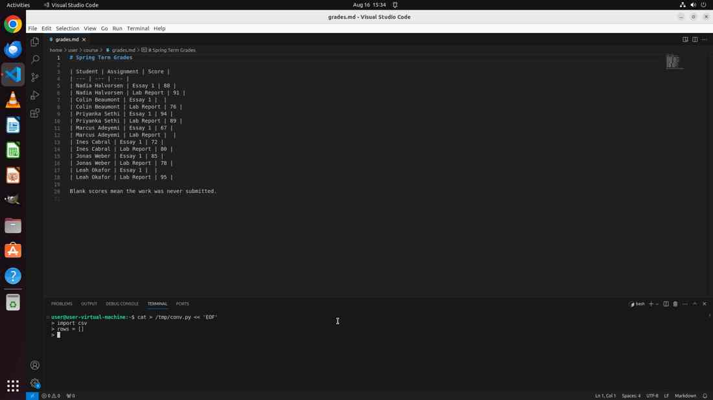
step 6.7 00:34:55
EXECUTED (pyautogui in VM)pyautogui.typewrite("with open('/home/user/course/grades.md') as f:")
step 6.8 00:34:58
EXECUTED (pyautogui in VM)pyautogui.press("enter")

step 6.9 00:35:02
EXECUTED (pyautogui in VM)pyautogui.typewrite(" for line in f:")
step 6.10 00:35:06
EXECUTED (pyautogui in VM)pyautogui.press("enter")
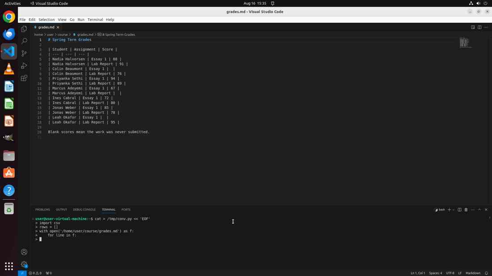
step 6.11 00:35:09
EXECUTED (pyautogui in VM)pyautogui.typewrite(" line = line.strip()")
step 6.12 00:35:28
EXECUTED (pyautogui in VM)pyautogui.press("enter")

step 6.13 00:35:32
EXECUTED (pyautogui in VM)pyautogui.typewrite(" if not line.startswith('|'):")
step 6.14 00:35:36
EXECUTED (pyautogui in VM)pyautogui.press("enter")

step 6.15 00:35:39
EXECUTED (pyautogui in VM)pyautogui.typewrite(" continue")
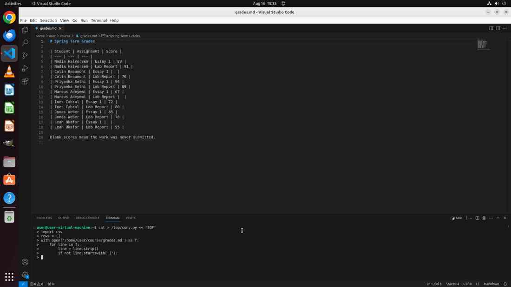
step 6.16 00:35:43
EXECUTED (pyautogui in VM)pyautogui.press("enter")
step 6.17 00:35:47
EXECUTED (pyautogui in VM)pyautogui.typewrite(" cells = [c.strip() for c in line.strip('|').split('|')]")
step 6.18 00:35:51
EXECUTED (pyautogui in VM)pyautogui.press("enter")
step 6.19 00:35:54
EXECUTED (pyautogui in VM)pyautogui.typewrite(" if len(cells) < 3:")
step 6.20 00:35:58
EXECUTED (pyautogui in VM)pyautogui.press("enter")
step 6.21 00:36:02
EXECUTED (pyautogui in VM)pyautogui.typewrite(" continue")
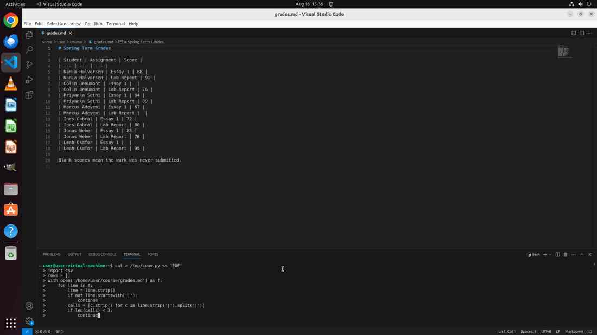
step 6.22 00:36:05
EXECUTED (pyautogui in VM)pyautogui.press("enter")
step 6.23 00:36:09
EXECUTED (pyautogui in VM)pyautogui.typewrite(" student, assignment, score = cells[0], cells[1], cells[2]")
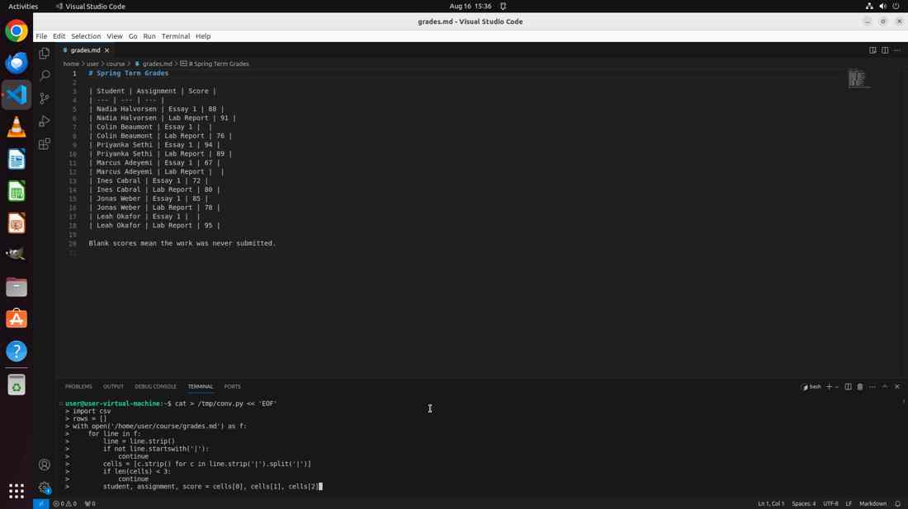
step 6.24 00:36:12
EXECUTED (pyautogui in VM)pyautogui.press("enter")
step 6.25 00:36:16
EXECUTED (pyautogui in VM)pyautogui.typewrite(" if student.lower() == 'student':")
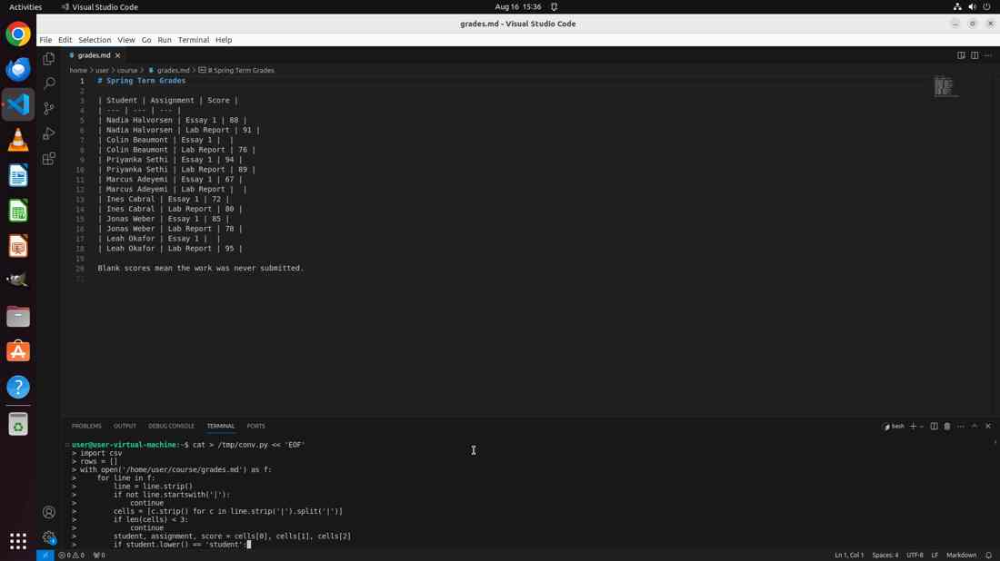
step 6.26 00:36:19
EXECUTED (pyautogui in VM)pyautogui.press("enter")
step 6.27 00:36:22
EXECUTED (pyautogui in VM)pyautogui.typewrite(" continue")
step 6.28 00:36:26
EXECUTED (pyautogui in VM)pyautogui.press("enter")
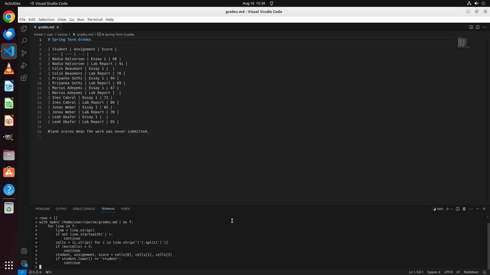
step 6.29 00:36:29
EXECUTED (pyautogui in VM)pyautogui.typewrite(" if set(student) <= set('-: '):")
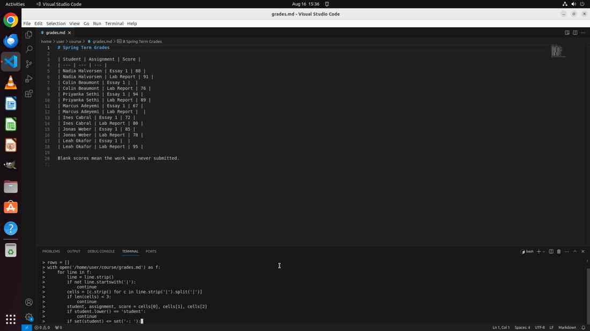
step 6.30 00:36:37
EXECUTED (pyautogui in VM)pyautogui.press("enter")
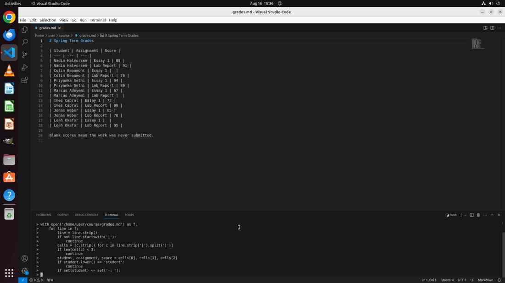
step 6.31 00:36:51
EXECUTED (pyautogui in VM)pyautogui.typewrite(" continue")

step 6.32 00:36:55
EXECUTED (pyautogui in VM)pyautogui.press("enter")
step 6.33 00:37:00
EXECUTED (pyautogui in VM)pyautogui.typewrite(" if score == '':")
step 6.34 00:37:03
EXECUTED (pyautogui in VM)pyautogui.press("enter")
step 6.35 00:37:07
EXECUTED (pyautogui in VM)pyautogui.typewrite(" continue")
step 6.36 00:37:11
EXECUTED (pyautogui in VM)pyautogui.press("enter")
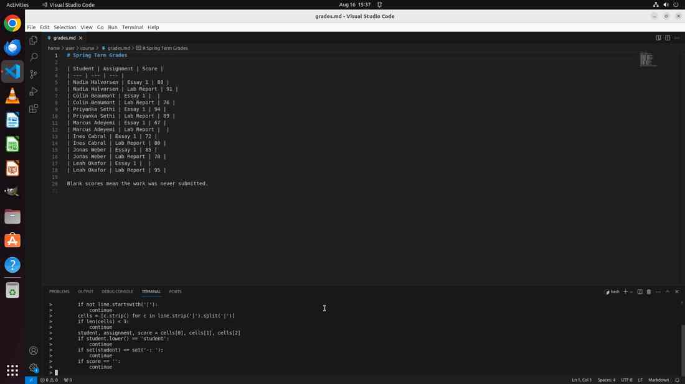
step 6.37 00:37:15
EXECUTED (pyautogui in VM)pyautogui.typewrite(" rows.append([student, assignment, score])")
step 6.38 00:37:19
EXECUTED (pyautogui in VM)pyautogui.press("enter")
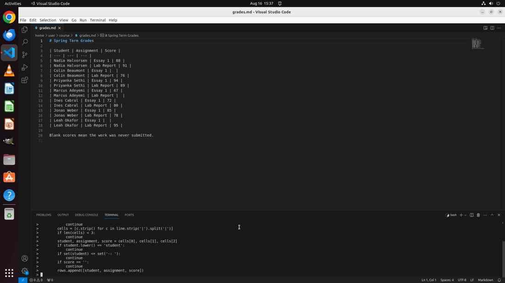
step 6.39 00:37:24
EXECUTED (pyautogui in VM)pyautogui.typewrite("with open('/home/user/course/grades.csv', 'w', newline='') as f:")
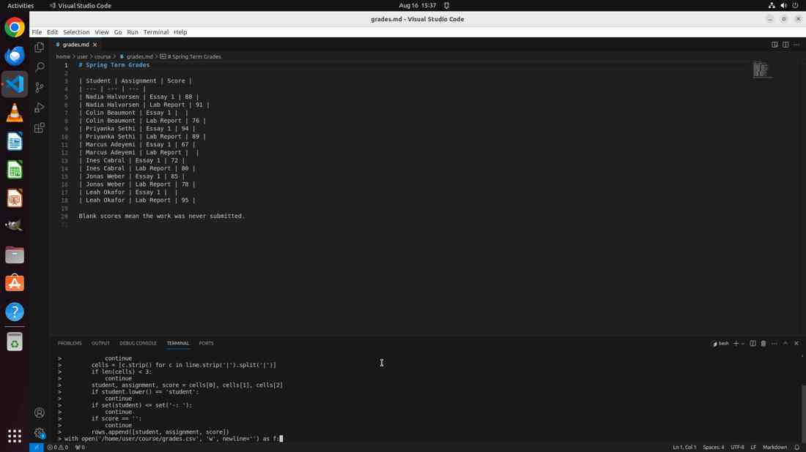
step 6.40 00:37:29
EXECUTED (pyautogui in VM)pyautogui.press("enter")
step 6.41 00:37:33
EXECUTED (pyautogui in VM)pyautogui.typewrite(" w = csv.writer(f)")
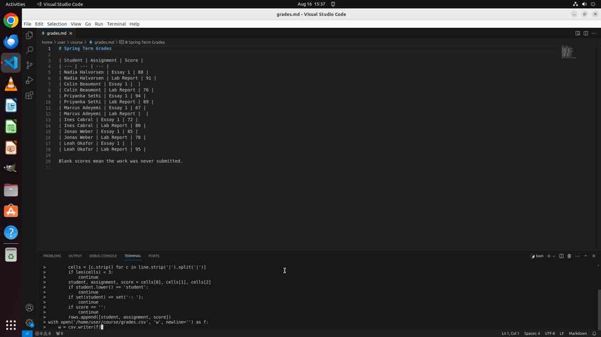
step 6.42 00:37:40
EXECUTED (pyautogui in VM)pyautogui.press("enter")
step 6.43 00:37:44
EXECUTED (pyautogui in VM)pyautogui.typewrite(" w.writerow(['Student', 'Assignment', 'Score'])")
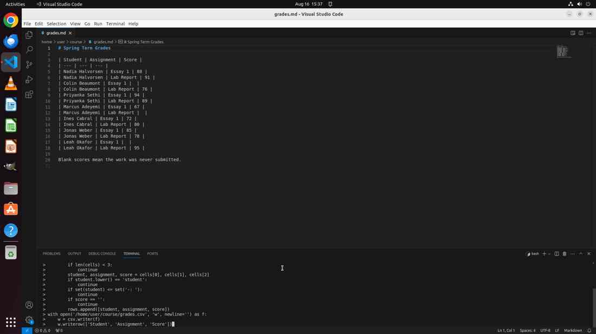
step 6.44 00:37:49
EXECUTED (pyautogui in VM)pyautogui.press("enter")
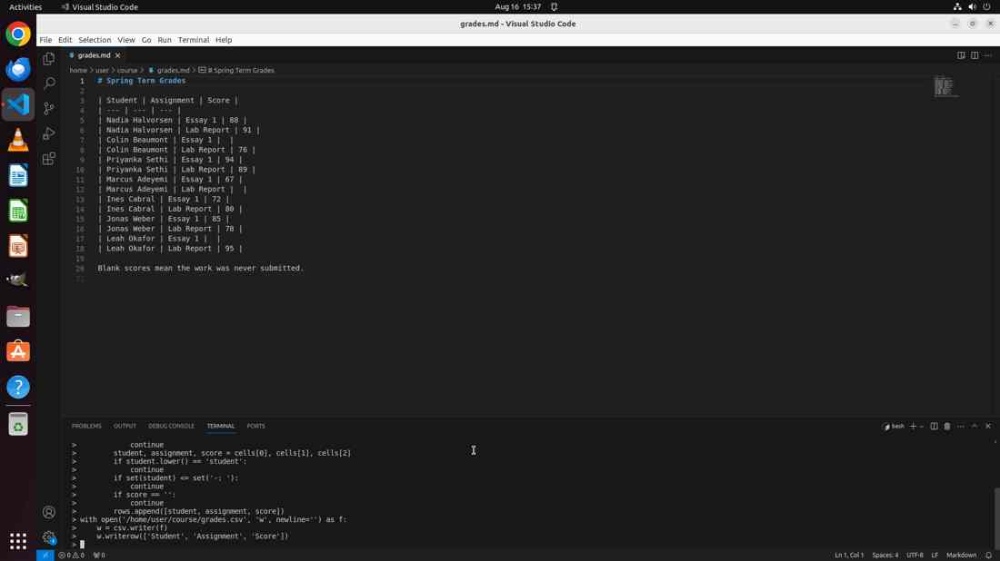
step 6.45 00:37:53
EXECUTED (pyautogui in VM)pyautogui.typewrite(" w.writerows(rows)")
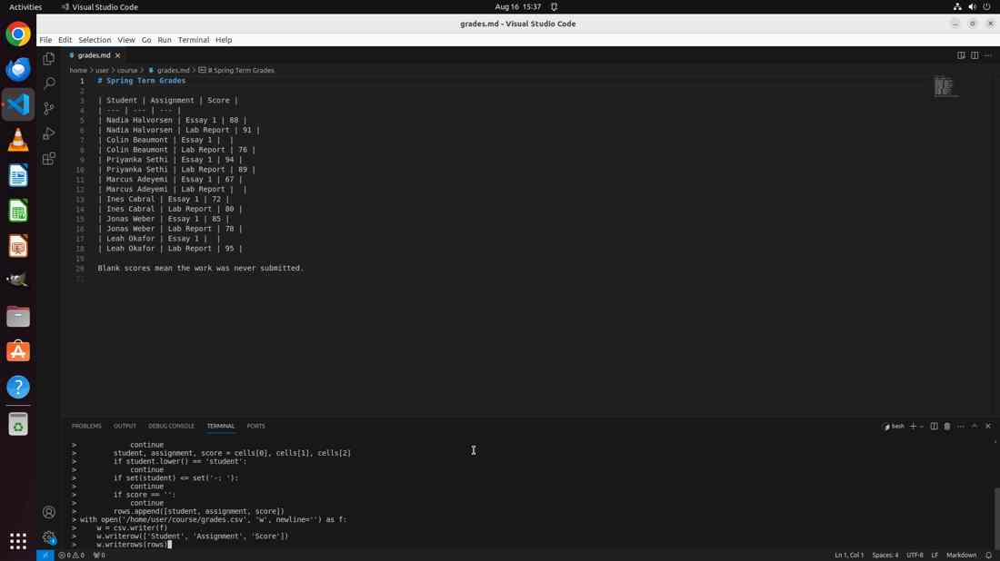
step 6.46 00:37:57
EXECUTED (pyautogui in VM)pyautogui.press("enter")
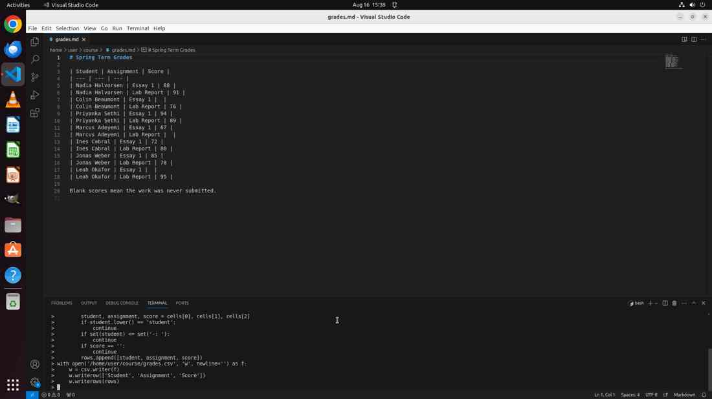
step 6.47 00:38:02
EXECUTED (pyautogui in VM)pyautogui.typewrite("print('WROTE', len(rows), 'data rows')")
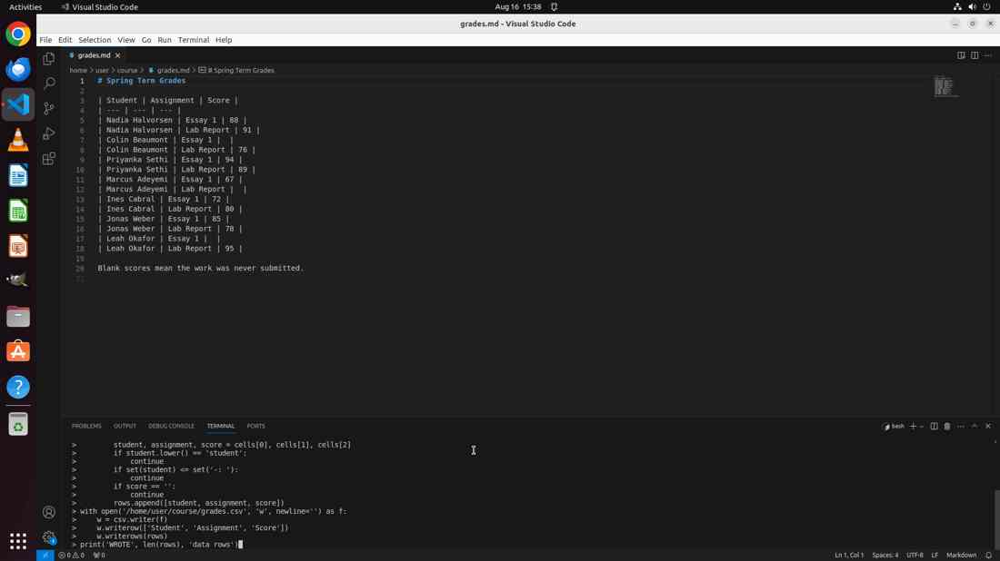
step 6.48 00:38:06
EXECUTED (pyautogui in VM)pyautogui.press("enter")
step 6.49 00:38:10
EXECUTED (pyautogui in VM)pyautogui.typewrite("EOF")
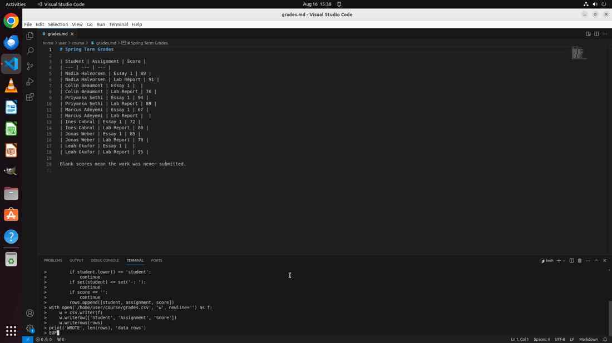
step 6.50 00:38:15
EXECUTED (pyautogui in VM)pyautogui.press("enter")
step 6.51 00:38:19
EXECUTED (pyautogui in VM)pyautogui.typewrite("python3 /tmp/conv.py")
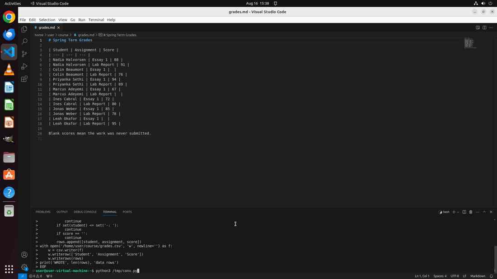
step 7 00:38:27
THINKINGThe heredoc was written and the python3 command is typed at the prompt. Now I press Enter to run it.
ACTIONThe script is ready. Let me run it by pressing Enter.
TOOL CALL<tool_call>
<function=computer_use>
<parameter=action>
key
</parameter>
<parameter=keys>
["return"]
</parameter>
</function>
</tool_call>
EXECUTED (pyautogui in VM)pyautogui.press("return")
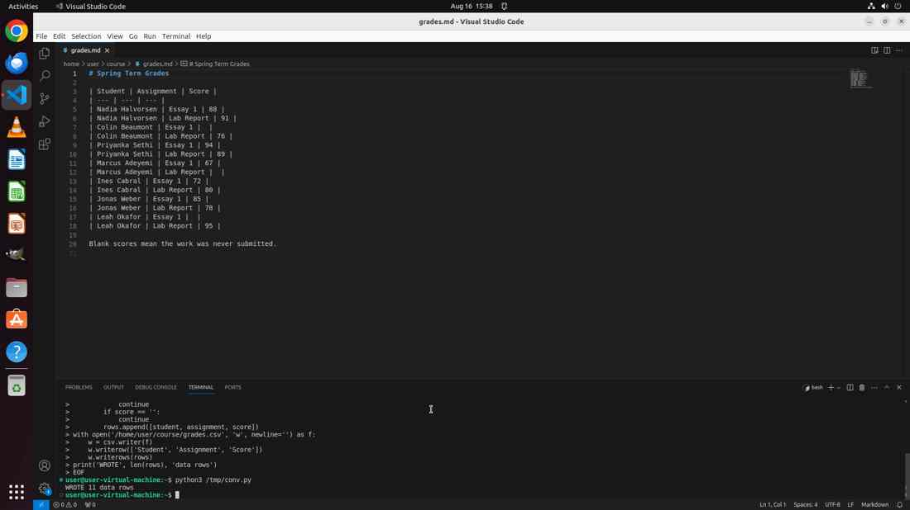
step 8 00:38:48
THINKINGIt printed "WROTE 11 data rows". The table had 14 data rows total; 3 had blank scores (Colin Beaumont Essay 1, Marcus Adeyemi Lab Report, Leah Okafor Essay 1), so 14-3 = 11. That matches.
Let me verify the CSV content by catting the file.
ACTIONIt wrote 11 data rows (14 total minus 3 blank-score rows). Let me verify the CSV content.
TOOL CALL<tool_call>
<function=computer_use>
<parameter=action>
type
</parameter>
<parameter=text>
cat /home/user/course/grades.csv
</parameter>
</function>
</tool_call>
EXECUTED (pyautogui in VM)pyautogui.typewrite("cat /home/user/course/grades.csv")
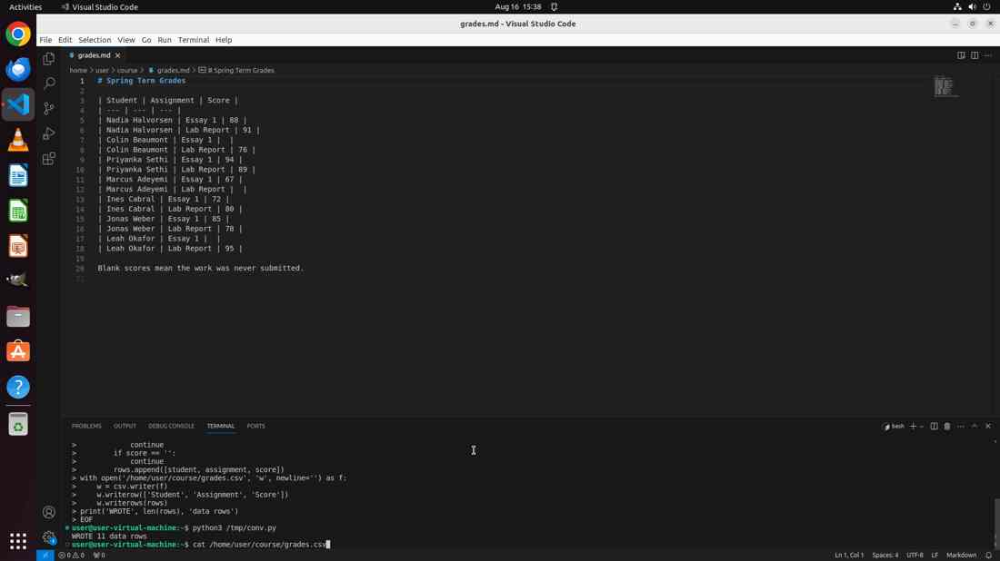
step 9 00:38:55
THINKINGI need to press Enter to execute the cat command.
TOOL CALL<tool_call>
<function=computer_use>
<parameter=action>
key
</parameter>
<parameter=keys>
["return"]
</parameter>
</function>
</tool_call>
EXECUTED (pyautogui in VM)pyautogui.press("return")
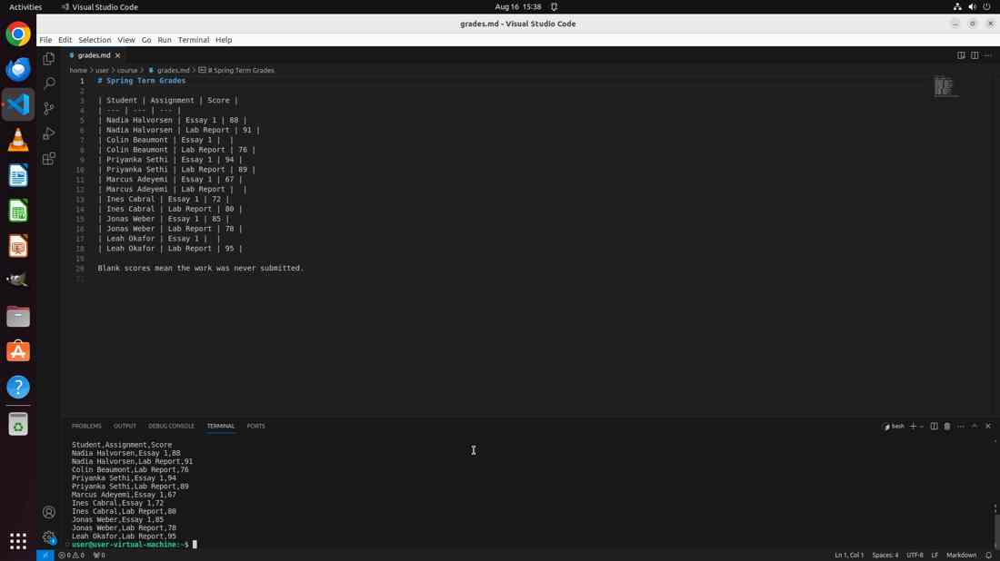
step 10 00:39:10
THINKINGThe CSV content is displayed:
Student,Assignment,Score
Nadia Halvorsen,Essay 1,88
Nadia Halvorsen,Lab Report,91
Colin Beaumont,Lab Report,76
Priyanka Sethi,Essay 1,94
Priyanka Sethi,Lab Report,89
Marcus Adeyemi,Essay 1,67
Ines Cabral,Essay 1,72
Ines Cabral,Lab Report,80
Jonas Weber,Essay 1,85
Jonas Weber,Lab Report,78
Leah Okafor,Lab Report,95
That's exactly 11 data rows + header, with the 3 blank-score rows (Colin Beaumont Essay 1, Marcus Adeyemi Lab Report, Leah Okafor Essay 1) correctly dropped. The task is complete.
ACTIONThe CSV file was created successfully at /home/user/course/grades.csv. The output confirms it contains the correct header and 11 data rows, with the three blank-score rows (Colin Beaumont – Essay 1, Marcus Adeyemi – Lab Report, and Leah Okafor – Essay 1) correctly dropped:
```
Student,Assignment,Score
Nadia Halvorsen,Essay 1,88
Nadia Halvorsen,Lab Report,91
Colin Beaumont,Lab Report,76
Priyanka Sethi,Essay 1,94
Priyanka Sethi,Lab Report,89
Marcus Adeyemi,Essay 1,67
Ines Cabral,Essay 1,72
Ines Cabral,Lab Report,80
Jonas Weber,Essay 1,85
Jonas Weber,Lab Report,78
Leah Okafor,Lab Report,95
```
The task is complete: each markdown table row became one CSV row with the Student,Assignment,Score columns, and any row with a blank score was removed.
EXECUTED (pyautogui in VM)DONE